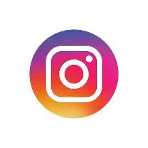

Sobre mí
Este es un proyecto que intenta tratar de difundir lo bueno que puede ser el reciclaje, ente proyecto yo junto a mi equipo hicimos un vehiculo, un vehiculo pesado tipo sandcat a "escala" en el cual alprincipio tratamos de hacerlo de botellas de plastico pero al observar que seria de masiado difisil para moldear nos decidimos al final por el plastico pbc ya que seria mas facil de moldar y poder pergar.dejaremos un video por el cual nos inspiro a realizar este proyecto.
Como se realizo el proyecto
Los materiales que se usaron pra realizar este proyeco fueron pocos al basarse del reciclaje de basura se os dificulto buscar materiasles de buena calidad para nuestro proyecto, al principio votamos por la opcion del plastico duro como botellas de cocola reciclaves pero al ver que fue dificil tratar de moldear pasamos a optar por el plastico pbc que seria un tubo que nos encontramos tirado en la calle, lo limpiamos y moldemaos con facilidad. la elavoracion del proyecto fue como primer punto fue bucar el diseño del sandcat luego fue buscar el materias para luego marcar y cortar como penultimo punto fue pintar y decorar para que altimo pegaramos y finalizar el proyecto


Contactanos
Puedes contactarme a través de este correo electrónico o cuenta de instagram:proyectosandcataescala@gmail.com
